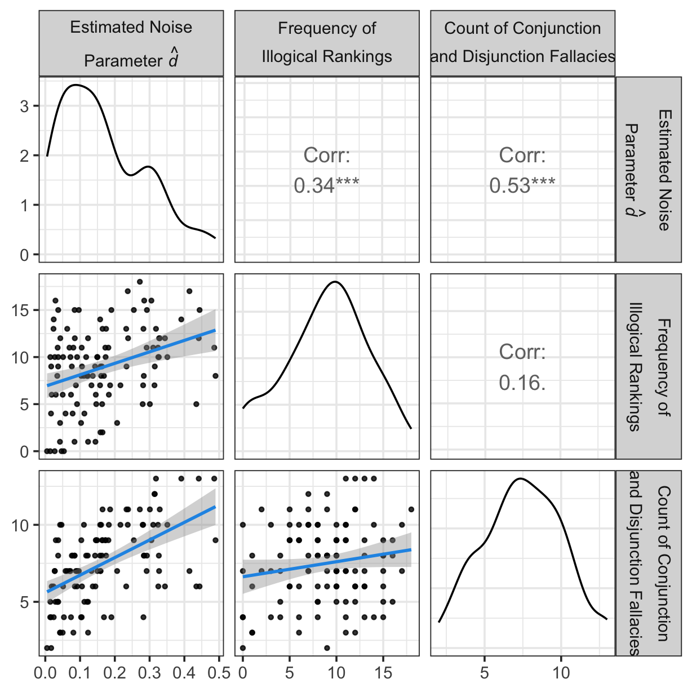
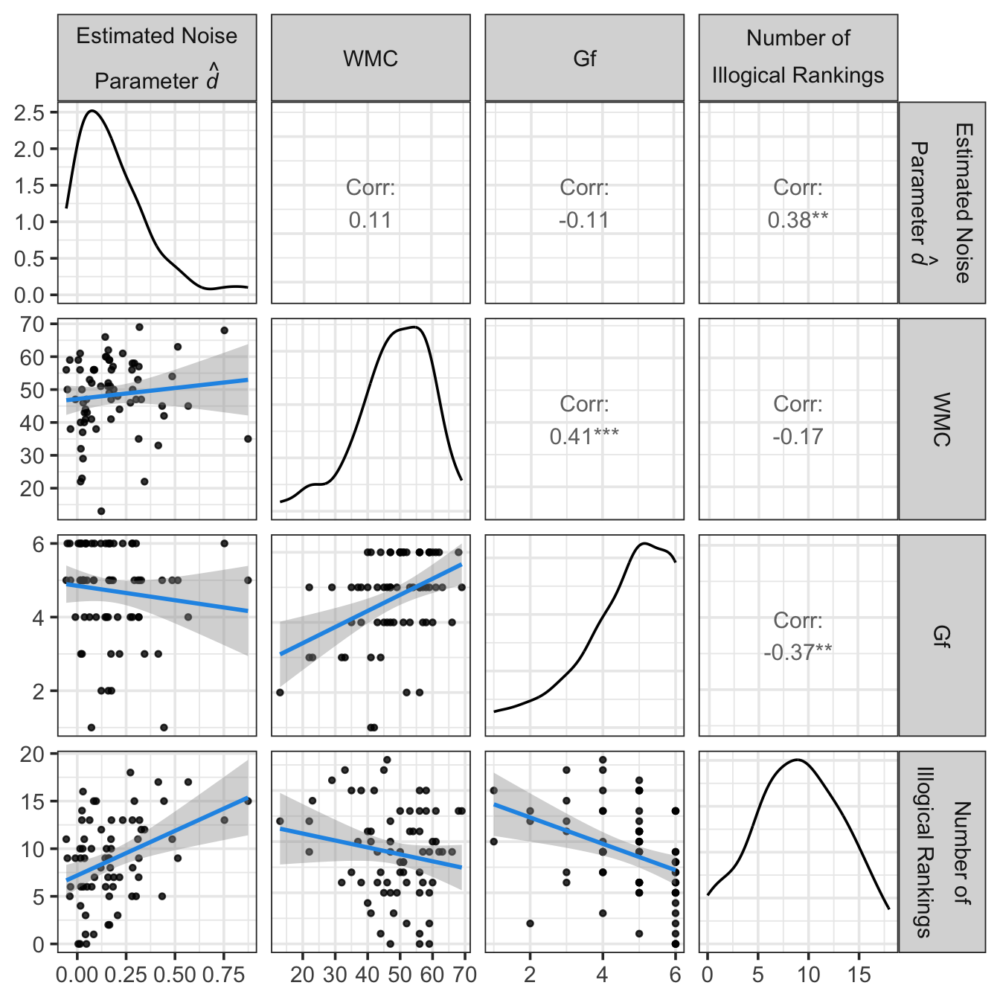

if (!requireNamespace("pacman", quietly = TRUE)) {
install.packages("pacman")
}
library("pacman")
p_load(tidyverse, here, GGally, ppcor, lme4, lmtest)
## read-in data
#if the data cannot be read, try df_noise_conjdisj <- read.csv(here::here("data",
# "part2_estimation_task",
# "noise_conj_disj.csv"))
df_noise_conjdisj <- read.csv(here::here("data_and_analysis", "data",
"part2_estimation_task",
"noise_conj_disj.csv"))
#155 participants
df_ranking <- read.csv(here::here("data_and_analysis", "data",
"part3_ranking_task",
"result_ranking.csv")) |>
filter(id %in% df_noise_conjdisj$id) #143 participants
df_OSPAN <- read.csv(here::here("data_and_analysis", "data",
"part4_WMC_Gf",
"df_part4_OSPAN.csv")) |>
filter(id %in% df_ranking$id) #87 participants
df_SSPAN <- read.csv(here::here("data_and_analysis", "data",
"part4_WMC_Gf",
"df_part4_SSPAN.csv")) |>
filter(id %in% df_ranking$id) #87 participants
#df_RSPAN <- read.csv(here::here("data_and_analysis", "data",
# "part4_WMC_Gf",
# "df_part4_RSPAN.csv")) |>
# filter(id %in% df_ranking$id) #87 participants
###we decided to not use the RSPAN scores
df_HMT <- read.csv(here::here("data_and_analysis", "data",
"part4_WMC_Gf",
"df_HMT.csv")) |>
dplyr::select(id, HMT_score = no_correct) |>
dplyr::filter(id %in% df_ranking$id)
#creating a sub-directory for saving the plots
plots_dir <- file.path(getwd(), "plots")
if (!dir.exists(plots_dir)) dir.create(plots_dir, recursive = TRUE)Analysis
R preparation
Data exclusion ：
#part 2: excluding 2 participants who always responded 100\% or 90\%.
exclusion_noise <-read.csv(here::here("data_and_analysis", "data",
"part2_estimation_task",
"exclusion_part2_IDs.csv"
))
df_noise_conjdisj <- df_noise_conjdisj |>
filter(! id %in% exclusion_noise$id) |> #153 participants
filter(d_average >= 0 & d_average <= 0.5)
#part 3: excluding 8 (who translated German to English when performing the experiment)
# + 8(who failed the comprehension check question) = 16 participants
exclusion_ranking <- read.csv(here::here("data_and_analysis",
"data", "part3_ranking_task",
"exclusion_part3_IDs.csv"))
df_ranking <- df_ranking |> filter(! id %in% exclusion_ranking$id) |>
filter(id %in% df_noise_conjdisj$id) #125 participants
#part 4: excluding 2 participants, one was excluded for translating German to English when performing the experiment, another for starting the experiment mutiple times
exclusion_WMGf <- read.csv(here::here("data_and_analysis", "data",
"part4_WMC_Gf",
"exclusion_part4_IDs.csv"))
df_OSPAN <- df_OSPAN |> filter(! id %in% exclusion_WMGf$id)
df_SSPAN <- df_SSPAN |> filter(! id %in% exclusion_WMGf$id)
WMC_result <- df_OSPAN |>
full_join(df_SSPAN, by = c("id", "splength")) #85 participants
#excluding 9 participants, who did not meet the processing-task accuracy criterion (at least 85%) in both the operation and symmetry span322
WMC_result <- WMC_result |>
group_by(id) |>
fill(OSPAN_processing, SSPAN_processing, .direction = "updown") |>
mutate(OSPAN_pass = ifelse(OSPAN_processing >= 0.85, 1, 0),
SSPAN_pass = ifelse(SSPAN_processing >= 0.85, 1, 0)) |>
filter(OSPAN_pass == 1 & SSPAN_pass == 1 )
WMC_result <- WMC_result |>
filter(id %in% df_ranking$id) #69 participants
df_HMT <- df_HMT |>
filter(id %in% WMC_result$id) #69 participantsDemographic information:
data_demo <- read.csv(here::here("data_and_analysis",
"data", "part3_ranking_task",
"data_demo.csv"))
data_demo_RQ1 <- data_demo |>
filter(id %in% df_ranking$id)
data_demo_RQ1 |> group_by(gender) |> count() # A tibble: 3 × 2
# Groups: gender [3]
gender n
<chr> <int>
1 female 32
2 male 76
3 non-binary 2data_demo_RQ1 |>
summarise(
mean_age = mean(age),
sd_age = sd(age),
range_age = range(age)
)Warning: Returning more (or less) than 1 row per `summarise()` group was deprecated in
dplyr 1.1.0.
ℹ Please use `reframe()` instead.
ℹ When switching from `summarise()` to `reframe()`, remember that `reframe()`
always returns an ungrouped data frame and adjust accordingly. mean_age sd_age range_age
1 28.59091 7.278592 19
2 28.59091 7.278592 63data_demo_RQ2 <- data_demo |>
filter(id %in% df_HMT$id)
data_demo_RQ2 |> group_by(gender) |> count()# A tibble: 2 × 2
# Groups: gender [2]
gender n
<chr> <int>
1 female 15
2 male 45data_demo_RQ2 |>
summarise(
mean_age = mean(age),
sd_age = sd(age),
range_age = range(age)
)Warning: Returning more (or less) than 1 row per `summarise()` group was deprecated in
dplyr 1.1.0.
ℹ Please use `reframe()` instead.
ℹ When switching from `summarise()` to `reframe()`, remember that `reframe()`
always returns an ungrouped data frame and adjust accordingly. mean_age sd_age range_age
1 28.16667 8.277326 19
2 28.16667 8.277326 63Robustness check of the results:
To assess the robustness of the results, in addition to the analyses reported in the main text, we repeated the analyses under alternative exclusion criteria: We (1) repeated the analyses without excluding any participant in Part 2 (the estimation task) (by skipping the code df_noise_conjdisj <- df_noise_conjdisj |> filter(! id %in% exclusion_noise$id)), and (2) repeated the analyses further excluding those participants whose estimated noise parameters lie outside of the theoretical ranges ( by running the code df_noise_conjdisj <- df_noise_conjdisj |> filter(! id %in% exclusion_noise$id) |> filter(d_average >= 0 & d_average <= 0.5 instead). Across these specifications, the results were similar to the results reported in the main text and our substantive conclusions remained unchanged.
Research Question 1
Association between the estiamted noise, number of illogical rankings, and additionally the count of conjunction and disjunction fallacies
Visualization:
# prepare the dataset for the plot
df_ranking_aggregated <- df_ranking |>
group_by(id) |>
mutate(sum_illogical = sum(logical_pass)) |> #the number of trials where the responses were illogical
dplyr::select(id, sum_illogical, get_logic) |>
unique()
aggregated_noise_illogical <- df_ranking_aggregated |>
left_join(df_noise_conjdisj, by = "id") |>
drop_na() |>
ungroup() |>
dplyr::select(id,
d_average,
#number_conj,
#number_disj,
sum_illogical,
number_conj_disj,
get_logic) #125 participants
#descriptive statistics
( summary_table <- aggregated_noise_illogical |>
summarise(across(c(d_average, sum_illogical, number_conj_disj, get_logic),
list(
mean = ~mean(.x, na.rm = TRUE),
sd = ~sd(.x, na.rm = TRUE),
min = ~min(.x, na.rm = TRUE),
max = ~max(.x, na.rm = TRUE)
),
.names = "{.col}_{.fn}")) |>
mutate(across(everything(), ~round(.x, 2))))# A tibble: 1 × 16
d_average_mean d_average_sd d_average_min d_average_max sum_illogical_mean
<dbl> <dbl> <dbl> <dbl> <dbl>
1 0.17 0.12 0.01 0.49 8.94
# ℹ 11 more variables: sum_illogical_sd <dbl>, sum_illogical_min <dbl>,
# sum_illogical_max <dbl>, number_conj_disj_mean <dbl>,
# number_conj_disj_sd <dbl>, number_conj_disj_min <dbl>,
# number_conj_disj_max <dbl>, get_logic_mean <dbl>, get_logic_sd <dbl>,
# get_logic_min <dbl>, get_logic_max <dbl>#plot
custom_labels <- c(
"atop('Estimated Noise', 'Parameter ' * hat(italic(d)))",
"atop('Frequency of', 'Illogical Rankings')",
"atop('Count of Conjunction', 'and Disjunction Fallacies')"
)
lower_lm <- function(data, mapping,
se = TRUE, level = 0.95, linewidth = 1,
fullrange = TRUE) {
ggplot(data = data, mapping = mapping) +
geom_point(alpha = 0.8, size = 1) +
geom_smooth(method = "lm",
se = se, level = level,
linewidth = linewidth, fullrange = fullrange,
color = "#2297E6" )
}
( p1 <- ggpairs(
aggregated_noise_illogical,
columns = 2:4,
columnLabels = custom_labels,
labeller = "label_parsed",
upper = list(continuous = wrap("cor", size = 5, digits = 2)),
lower = list(continuous = wrap(lower_lm,
se = TRUE, level = 0.95, linewidth = 1)),
diag = list(continuous = "densityDiag")
) +
theme_bw(base_size = 14) ) `geom_smooth()` using formula = 'y ~ x'
`geom_smooth()` using formula = 'y ~ x'
`geom_smooth()` using formula = 'y ~ x'
#save the plot
#ggsave(
# filename = file.path(plots_dir, "noise_ranking_conjdisj.pdf"),
# plot = p1,
# width = 6.4, height = 6.4
#)
ggsave(
filename = file.path(plots_dir, "noise_ranking_conjdisj_exclu.png"),
plot = p1,
width = 6.4, height = 6.4,
dpi = 300
)`geom_smooth()` using formula = 'y ~ x'
`geom_smooth()` using formula = 'y ~ x'
`geom_smooth()` using formula = 'y ~ x'Statistical modelling:
Pearson correlation between the estimate noise and the number of illogical rankings:
cor.test(aggregated_noise_illogical$d_average,
aggregated_noise_illogical$sum_illogical,
method = "pearson",
conf.level = 0.95)
Pearson's product-moment correlation
data: aggregated_noise_illogical$d_average and aggregated_noise_illogical$sum_illogical
t = 3.7294, df = 108, p-value = 0.0003076
alternative hypothesis: true correlation is not equal to 0
95 percent confidence interval:
0.1606938 0.4937843
sample estimates:
cor
0.3377722 Pearson correlation between the estimated noise and the count of disjunction and conjunction fallacies:
cor.test(aggregated_noise_illogical$d_average,
aggregated_noise_illogical$number_conj_disj,
method = "pearson",
conf.level = 0.95)
Pearson's product-moment correlation
data: aggregated_noise_illogical$d_average and aggregated_noise_illogical$number_conj_disj
t = 6.5519, df = 108, p-value = 1.992e-09
alternative hypothesis: true correlation is not equal to 0
95 percent confidence interval:
0.3844622 0.6551331
sample estimates:
cor
0.533312 Pearson correlation between the number of illogical rankings and the count of disjunction and conjunction fallacies:
cor.test(aggregated_noise_illogical$sum_illogical,
aggregated_noise_illogical$number_conj_disj,
method = "pearson",
conf.level = 0.95)
Pearson's product-moment correlation
data: aggregated_noise_illogical$sum_illogical and aggregated_noise_illogical$number_conj_disj
t = 1.7319, df = 108, p-value = 0.08615
alternative hypothesis: true correlation is not equal to 0
95 percent confidence interval:
-0.02358495 0.34112437
sample estimates:
cor
0.1643824 Partial correlation between the estimated noise parameter and the number of illogical rankings, controlling for the count of conjunction and disjunction fallacies:
pc <- pcor.test(aggregated_noise_illogical[,"d_average"], aggregated_noise_illogical[,"sum_illogical"], aggregated_noise_illogical[,"number_conj_disj"], method = "pearson")
pc estimate p.value statistic n gp Method
1 0.2997383 0.001543291 3.249945 110 1 pearson95% confidence interval:
r <- as.numeric(pc$estimate)
n <- pc$n
k <- pc$gp # number of control vars
se <- 1 / sqrt(n - k - 3) # Fisher z SE
z <- atanh(r)
zcrit <- qnorm(0.975)
ci <- tanh(c(z - zcrit*se, z + zcrit*se))
ci[1] 0.1183069 0.4618030Partial correlation between the number of illogical rankings and the count of conjunction and disjunction fallacies, controlling for the estimated noise parameter
pc2 <- pcor.test(aggregated_noise_illogical[,"number_conj_disj"], aggregated_noise_illogical[,"sum_illogical"],
aggregated_noise_illogical[,"d_average"], method = "pearson")
pc2 estimate p.value statistic n gp Method
1 -0.01978831 0.8381705 -0.2047319 110 1 pearson95% confidence interval:
r2 <- as.numeric(pc2$estimate)
n2 <- pc2$n
k2 <- pc2$gp # number of control vars
se2 <- 1 / sqrt(n2 - k2 - 3) # Fisher z SE
z2 <- atanh(r2)
zcrit2 <- qnorm(0.975)
ci2 <- tanh(c(z2 - zcrit2*se2, z2 + zcrit2*se2))
ci2[1] -0.2071191 0.1689423GLMM (logit link function; family: binomial) predicting the probability of logical rankings with predictors: event-set type, the estimated noise parameter (the interaction between the event-set type and the estimated noise parameter, the trial number, as well as the logic rule question)
#prepare the dataset for GLMMs
noise_illogical_by_trials <- df_ranking |>
left_join(df_noise_conjdisj, by = "id") |>
dplyr::select(id, f00, condition, logical_pass,
d_average, number_conj_disj, get_logic) #125 participants Exploratory analysis: Is even-set condition a moderator?
predictors: noise, event-set type, and their interactions
the interaction not significant
options(contrasts = c("contr.treatment", "contr.poly"))
glmm_condition_noise_interaction <- glmer(logical_pass ~ condition + d_average +
condition*d_average +
(1 + condition|id),
data = noise_illogical_by_trials,
family = binomial(link = "logit"))
summary(glmm_condition_noise_interaction)Generalized linear mixed model fit by maximum likelihood (Laplace
Approximation) [glmerMod]
Family: binomial ( logit )
Formula: logical_pass ~ condition + d_average + condition * d_average +
(1 + condition | id)
Data: noise_illogical_by_trials
AIC BIC logLik -2*log(L) df.resid
3084.4 3125.5 -1535.2 3070.4 2633
Scaled residuals:
Min 1Q Median 3Q Max
-2.1235 -0.6632 -0.4173 0.7722 3.0809
Random effects:
Groups Name Variance Std.Dev. Corr
id (Intercept) 0.3911 0.6254
conditionmiddle 0.2942 0.5424 0.51
Number of obs: 2640, groups: id, 110
Fixed effects:
Estimate Std. Error z value Pr(>|z|)
(Intercept) -1.8846 0.1681 -11.210 < 2e-16 ***
conditionmiddle 1.5153 0.1927 7.865 3.69e-15 ***
d_average 3.4286 0.7451 4.602 4.19e-06 ***
conditionmiddle:d_average -1.1423 0.8704 -1.312 0.189
---
Signif. codes: 0 '***' 0.001 '**' 0.01 '*' 0.05 '.' 0.1 ' ' 1
Correlation of Fixed Effects:
(Intr) cndtnm d_avrg
conditnmddl -0.399
d_average -0.824 0.299
cndtnmddl:_ 0.295 -0.823 -0.305get_or_table <- function(model, ci_level = 0.95) {
# Get coefficients and SEs
summ <- summary(model)$coefficients
coefs <- summ[, "Estimate"]
ses <- summ[, "Std. Error"]
# Calculate critical value based on user-defined CI level
tail_area <- (1 - ci_level) / 2
zval <- abs(qnorm(tail_area))
# The Math
lower <- exp(coefs - zval * ses)
upper <- exp(coefs + zval * ses)
or <- exp(coefs)
# Combine and round
res <- round(cbind(OR = or, Lower = lower, Upper = upper), 3)
return(as.data.frame(res))
}
get_or_table(glmm_condition_noise_interaction) OR Lower Upper
(Intercept) 0.152 0.109 0.211
conditionmiddle 4.551 3.119 6.638
d_average 30.834 7.158 132.822
conditionmiddle:d_average 0.319 0.058 1.757Exploratory analysis: trial number as predictor
predictors: noise, event-set type, f00(number of trials), if participants answered logic question correct or not (get_logical = 1, if the participant answered the question correctly)
options(contrasts = c("contr.treatment", "contr.poly"))
glmm_condition_noise_f00 <- glmer(logical_pass ~ condition + d_average +
f00 +
(1 + condition |id),
data = noise_illogical_by_trials,
family = binomial(link = "logit"))
summary(glmm_condition_noise_f00)Generalized linear mixed model fit by maximum likelihood (Laplace
Approximation) [glmerMod]
Family: binomial ( logit )
Formula: logical_pass ~ condition + d_average + f00 + (1 + condition | id)
Data: noise_illogical_by_trials
AIC BIC logLik -2*log(L) df.resid
3073.9 3115.0 -1529.9 3059.9 2633
Scaled residuals:
Min 1Q Median 3Q Max
-2.3108 -0.6332 -0.4145 0.7625 2.8468
Random effects:
Groups Name Variance Std.Dev. Corr
id (Intercept) 0.3733 0.6110
conditionmiddle 0.3190 0.5648 0.55
Number of obs: 2640, groups: id, 110
Fixed effects:
Estimate Std. Error z value Pr(>|z|)
(Intercept) -1.547730 0.174573 -8.866 < 2e-16 ***
conditionmiddle 1.313154 0.110330 11.902 < 2e-16 ***
d_average 3.145368 0.708299 4.441 8.97e-06 ***
f00 -0.021643 0.006191 -3.496 0.000473 ***
---
Signif. codes: 0 '***' 0.001 '**' 0.01 '*' 0.05 '.' 0.1 ' ' 1
Correlation of Fixed Effects:
(Intr) cndtnm d_avrg
conditnmddl -0.213
d_average -0.720 0.053
f00 -0.435 -0.035 -0.004get_or_table(glmm_condition_noise_f00) OR Lower Upper
(Intercept) 0.213 0.151 0.300
conditionmiddle 3.718 2.995 4.615
d_average 23.228 5.796 93.094
f00 0.979 0.967 0.991Exploratory analysis: if the estimated noise parameter \(\hat{d}\) explained additional variance in the frequency of illogical rankings beyond the effect of the event-set conditions
predictors: event-set type
options(contrasts = c("contr.treatment", "contr.poly"))
glmm_condition <- glmer(logical_pass ~ condition +
(1 + condition|id),
data = noise_illogical_by_trials,
family = binomial(link = "logit"))predictors: noise, event-set type
options(contrasts = c("contr.treatment", "contr.poly"))
glmm_condition_noise <- glmer(logical_pass ~ condition + d_average +
(1 + condition|id),
data = noise_illogical_by_trials,
family = binomial(link = "logit"))
summary(glmm_condition_noise)Generalized linear mixed model fit by maximum likelihood (Laplace
Approximation) [glmerMod]
Family: binomial ( logit )
Formula: logical_pass ~ condition + d_average + (1 + condition | id)
Data: noise_illogical_by_trials
AIC BIC logLik -2*log(L) df.resid
3084.1 3119.3 -1536.0 3072.1 2634
Scaled residuals:
Min 1Q Median 3Q Max
-2.1755 -0.6507 -0.4202 0.7689 2.9437
Random effects:
Groups Name Variance Std.Dev. Corr
id (Intercept) 0.3716 0.6096
conditionmiddle 0.3330 0.5771 0.52
Number of obs: 2640, groups: id, 110
Fixed effects:
Estimate Std. Error z value Pr(>|z|)
(Intercept) -1.8239 0.1568 -11.63 < 2e-16 ***
conditionmiddle 1.3078 0.1107 11.82 < 2e-16 ***
d_average 3.1508 0.7064 4.46 8.19e-06 ***
---
Signif. codes: 0 '***' 0.001 '**' 0.01 '*' 0.05 '.' 0.1 ' ' 1
Correlation of Fixed Effects:
(Intr) cndtnm
conditnmddl -0.254
d_average -0.801 0.052get_or_table(glmm_condition_noise) OR Lower Upper
(Intercept) 0.161 0.119 0.219
conditionmiddle 3.698 2.977 4.594
d_average 23.354 5.848 93.257likelihood ratio test:
lrtest(glmm_condition, glmm_condition_noise)Likelihood ratio test
Model 1: logical_pass ~ condition + (1 + condition | id)
Model 2: logical_pass ~ condition + d_average + (1 + condition | id)
#Df LogLik Df Chisq Pr(>Chisq)
1 5 -1545.3
2 6 -1536.0 1 18.62 1.596e-05 ***
---
Signif. codes: 0 '***' 0.001 '**' 0.01 '*' 0.05 '.' 0.1 ' ' 1Research Question 2
Can noise predict illogical rankings independently of working memory capacity (WMC) and fluid intelligence (Gf)?
Visualization:
#prepare the dataset for the plot
WMC_HMT <- WMC_result |>
group_by(id) |>
mutate(OSPAN_total = sum(OSPAN_partial_credit, na.rm = TRUE),
SSPAN_total = sum(SSPAN_partial_credit, na.rm = TRUE)) |>
dplyr::select(id, OSPAN_total, SSPAN_total) |>
unique() |>
mutate(WMC_composite = OSPAN_total + SSPAN_total) |>
left_join(df_HMT, by = "id")
noise_illogical_WMC_Gf_aggregated <- aggregated_noise_illogical |>
left_join(WMC_HMT , by = "id") |>
ungroup() |>
dplyr::select(id, d_average, WMC_composite, HMT_score, sum_illogical,
number_conj_disj, get_logic) |>
drop_na() #69 participants
( summary_table2 <- noise_illogical_WMC_Gf_aggregated |>
summarise(across(c(d_average, WMC_composite, HMT_score,
sum_illogical, number_conj_disj),
list(
mean = ~mean(.x, na.rm = TRUE),
sd = ~sd(.x, na.rm = TRUE),
min = ~min(.x, na.rm = TRUE),
max = ~max(.x, na.rm = TRUE)
),
.names = "{.col}_{.fn}")) |>
mutate(across(everything(), ~round(.x, 2))) )# A tibble: 1 × 20
d_average_mean d_average_sd d_average_min d_average_max WMC_composite_mean
<dbl> <dbl> <dbl> <dbl> <dbl>
1 0.16 0.13 0.01 0.49 47.9
# ℹ 15 more variables: WMC_composite_sd <dbl>, WMC_composite_min <dbl>,
# WMC_composite_max <dbl>, HMT_score_mean <dbl>, HMT_score_sd <dbl>,
# HMT_score_min <dbl>, HMT_score_max <dbl>, sum_illogical_mean <dbl>,
# sum_illogical_sd <dbl>, sum_illogical_min <dbl>, sum_illogical_max <dbl>,
# number_conj_disj_mean <dbl>, number_conj_disj_sd <dbl>,
# number_conj_disj_min <dbl>, number_conj_disj_max <dbl>#plot
custom_labels_noise_illogical_WMC <- c(
"atop('Estimated Noise', 'Parameter ' * hat(italic(d)))",
"WMC",
"Gf",
"atop('Frequency of', 'Illogical Rankings')"
#"atop('Count of Conjunction', 'and Disjunction Errors')"
)
( p2 <- ggpairs(
noise_illogical_WMC_Gf_aggregated, columns = 2:5,
columnLabels = custom_labels_noise_illogical_WMC,
labeller = "label_parsed",
upper = list(continuous = wrap("cor", size = 4, digits = 2)),
lower = list(continuous = wrap(lower_lm, se = TRUE, level = 0.95, linewidth = 1)),
diag = list(continuous = "densityDiag")
) +
theme_bw(base_size = 14) )`geom_smooth()` using formula = 'y ~ x'
`geom_smooth()` using formula = 'y ~ x'
`geom_smooth()` using formula = 'y ~ x'
`geom_smooth()` using formula = 'y ~ x'
`geom_smooth()` using formula = 'y ~ x'
`geom_smooth()` using formula = 'y ~ x'
#save the plot
#ggsave(
# filename = file.path(plots_dir, "noise_illogical_HMT_WMC.pdf"),
# plot = p2,
# width = 7, height = 7
#)
ggsave(
filename = file.path(plots_dir, "noise_illogical_HMT_WMC_exclu.png"),
plot = p2,
width = 7, height = 7,
dpi=300
)`geom_smooth()` using formula = 'y ~ x'
`geom_smooth()` using formula = 'y ~ x'
`geom_smooth()` using formula = 'y ~ x'
`geom_smooth()` using formula = 'y ~ x'
`geom_smooth()` using formula = 'y ~ x'
`geom_smooth()` using formula = 'y ~ x'Pearson correlation between the number of illogical rankings and Gf score(HMT_score; the score for the HMT task)
cor.test(noise_illogical_WMC_Gf_aggregated$HMT_score, noise_illogical_WMC_Gf_aggregated$sum_illogical,
method = "pearson",
conf.level = 0.95)
Pearson's product-moment correlation
data: noise_illogical_WMC_Gf_aggregated$HMT_score and noise_illogical_WMC_Gf_aggregated$sum_illogical
t = -3.294, df = 58, p-value = 0.001687
alternative hypothesis: true correlation is not equal to 0
95 percent confidence interval:
-0.5913033 -0.1590974
sample estimates:
cor
-0.3969844 Pearson correlation between the number of illogical rankings and WMC score
cor.test(noise_illogical_WMC_Gf_aggregated$WMC_composite, noise_illogical_WMC_Gf_aggregated$sum_illogical,
method = "pearson",
conf.level = 0.95)
Pearson's product-moment correlation
data: noise_illogical_WMC_Gf_aggregated$WMC_composite and noise_illogical_WMC_Gf_aggregated$sum_illogical
t = -1.4796, df = 58, p-value = 0.1444
alternative hypothesis: true correlation is not equal to 0
95 percent confidence interval:
-0.42409948 0.06642916
sample estimates:
cor
-0.1907125 Pearson correlation between the estimated noise parameter and WMC score
cor.test(noise_illogical_WMC_Gf_aggregated$d_average, noise_illogical_WMC_Gf_aggregated$WMC_composite,
method = "pearson",
conf.level = 0.95)
Pearson's product-moment correlation
data: noise_illogical_WMC_Gf_aggregated$d_average and noise_illogical_WMC_Gf_aggregated$WMC_composite
t = 1.0011, df = 58, p-value = 0.321
alternative hypothesis: true correlation is not equal to 0
95 percent confidence interval:
-0.1278303 0.3719409
sample estimates:
cor
0.1303247 Pearson correlation between the estimated noise parameter and Gf score
cor.test(noise_illogical_WMC_Gf_aggregated$d_average, noise_illogical_WMC_Gf_aggregated$HMT_score,
method = "pearson",
conf.level = 0.95)
Pearson's product-moment correlation
data: noise_illogical_WMC_Gf_aggregated$d_average and noise_illogical_WMC_Gf_aggregated$HMT_score
t = -1.5783, df = 58, p-value = 0.1199
alternative hypothesis: true correlation is not equal to 0
95 percent confidence interval:
-0.43446865 0.05376323
sample estimates:
cor
-0.2029319 GLMM (logit link function; family: binomial) predicting the probability of logical rankings with predictors: event-set type, the estimated noise parameter, WMC score and Gf score.
#prepare the dataset for GLMMs
noise_illogical_HMT_WMC_trials <- df_ranking |>
dplyr::select(id, f00, condition, logical_pass, get_logic) |>
left_join(WMC_HMT, by = "id") |>
left_join(df_noise_conjdisj, by = "id") |>
dplyr::select(id, f00, condition, logical_pass, get_logic, WMC_composite, HMT_score, d_average) |>
drop_na() #69 participants predictors: event-set type (condition), noise (d_average), WMC score (WMC_composite), Gf score (HMT_score)
glmm_condtion_noise_WMC_Gf <- glmer(logical_pass ~ condition + d_average +
WMC_composite + HMT_score +
(1 + condition |id),
data = noise_illogical_HMT_WMC_trials,
family = binomial(link = "logit"),
control = glmerControl(optimizer="bobyqa",
optCtrl=list(maxfun=1e5)))
summary(glmm_condtion_noise_WMC_Gf)Generalized linear mixed model fit by maximum likelihood (Laplace
Approximation) [glmerMod]
Family: binomial ( logit )
Formula: logical_pass ~ condition + d_average + WMC_composite + HMT_score +
(1 + condition | id)
Data: noise_illogical_HMT_WMC_trials
Control: glmerControl(optimizer = "bobyqa", optCtrl = list(maxfun = 1e+05))
AIC BIC logLik -2*log(L) df.resid
1639.4 1681.6 -811.7 1623.4 1432
Scaled residuals:
Min 1Q Median 3Q Max
-2.1513 -0.6213 -0.4026 0.6888 3.2129
Random effects:
Groups Name Variance Std.Dev. Corr
id (Intercept) 0.3436 0.5862
conditionmiddle 0.4181 0.6466 0.47
Number of obs: 1440, groups: id, 60
Fixed effects:
Estimate Std. Error z value Pr(>|z|)
(Intercept) -0.464607 0.556788 -0.834 0.40403
conditionmiddle 1.371520 0.157971 8.682 < 2e-16 ***
d_average 2.545511 0.956340 2.662 0.00777 **
WMC_composite -0.009799 0.011110 -0.882 0.37777
HMT_score -0.191763 0.098826 -1.940 0.05233 .
---
Signif. codes: 0 '***' 0.001 '**' 0.01 '*' 0.05 '.' 0.1 ' ' 1
Correlation of Fixed Effects:
(Intr) cndtnm d_avrg WMC_cm
conditnmddl -0.012
d_average -0.290 0.044
WMC_compost -0.526 -0.023 -0.239
HMT_score -0.465 -0.080 0.267 -0.431Predictors: event-set type (condition), noise (d_average), WMC score (WMC_composite), Gf score (HMT_score), interaction between condition and WMC score, interaction between condition and Gf score
glmm_condtion_noise_WMC_Gf_interactions <- glmer(logical_pass ~ condition + d_average +
WMC_composite + HMT_score +
condition*d_average + condition*HMT_score + condition*WMC_composite +
(1 + condition |id),
data = noise_illogical_HMT_WMC_trials,
family = binomial(link = "logit"),
control = glmerControl(optimizer="bobyqa",
optCtrl=list(maxfun=1e5)))
summary(glmm_condtion_noise_WMC_Gf_interactions)Generalized linear mixed model fit by maximum likelihood (Laplace
Approximation) [glmerMod]
Family: binomial ( logit )
Formula: logical_pass ~ condition + d_average + WMC_composite + HMT_score +
condition * d_average + condition * HMT_score + condition *
WMC_composite + (1 + condition | id)
Data: noise_illogical_HMT_WMC_trials
Control: glmerControl(optimizer = "bobyqa", optCtrl = list(maxfun = 1e+05))
AIC BIC logLik -2*log(L) df.resid
1643.5 1701.5 -810.8 1621.5 1429
Scaled residuals:
Min 1Q Median 3Q Max
-2.1726 -0.6248 -0.4092 0.6910 3.0933
Random effects:
Groups Name Variance Std.Dev. Corr
id (Intercept) 0.3382 0.5816
conditionmiddle 0.3851 0.6205 0.52
Number of obs: 1440, groups: id, 60
Fixed effects:
Estimate Std. Error z value Pr(>|z|)
(Intercept) -0.6457628 0.5745044 -1.124 0.26100
conditionmiddle 2.1927732 0.7281395 3.011 0.00260 **
d_average 2.7505874 0.9934958 2.769 0.00563 **
WMC_composite -0.0100584 0.0116008 -0.867 0.38592
HMT_score -0.1559867 0.1026421 -1.520 0.12858
conditionmiddle:d_average -0.9025711 1.2476933 -0.723 0.46944
conditionmiddle:HMT_score -0.1473014 0.1280844 -1.150 0.25013
conditionmiddle:WMC_composite 0.0001065 0.0146059 0.007 0.99418
---
Signif. codes: 0 '***' 0.001 '**' 0.01 '*' 0.05 '.' 0.1 ' ' 1
Correlation of Fixed Effects:
(Intr) cndtnm d_avrg WMC_cm HMT_sc cndt:_ c:HMT_
conditnmddl -0.271
d_average -0.287 0.088
WMC_compost -0.518 0.133 -0.244
HMT_score -0.457 0.130 0.255 -0.447
cndtnmddl:_ 0.090 -0.266 -0.292 0.074 -0.068
cndtnm:HMT_ 0.131 -0.458 -0.067 0.139 -0.311 0.241
cndtnm:WMC_ 0.133 -0.533 0.073 -0.286 0.139 -0.241 -0.434Z-transform continuous predictors for the ease of interpretation:
#prepare the dataset:
WMC_mean <- mean(WMC_HMT$WMC_composite) #48.33333
WMC_sd <- sd(WMC_HMT$WMC_composite) #11.36774
hmt_mean <- mean(WMC_HMT$HMT_score) #4.710145
hmt_sd <- sd(WMC_HMT$HMT_score) #1.28454
WMC_HMT_z <- WMC_HMT |>
mutate(WMC_z = (WMC_composite - WMC_mean) / WMC_sd,
HMT_z = (HMT_score - hmt_mean) / hmt_sd)
df_noise_conjdisj_z <- df_noise_conjdisj |>
filter(id %in% WMC_HMT_z$id)
noise_mean <- mean(df_noise_conjdisj_z$d_average)
noise_sd <- sd(df_noise_conjdisj_z$d_average)
df_noise_conjdisj_z <- df_noise_conjdisj_z |>
mutate(noise_z = (d_average - noise_mean)/noise_sd)
noise_illogical_HMT_WMC_trials_z <- df_ranking |>
left_join(WMC_HMT_z , by = "id") |>
left_join(df_noise_conjdisj_z, by = "id") |>
dplyr::select(id, f00, condition, logical_pass, number_conj_disj,
noise_z, WMC_z , HMT_z, get_logic) |>
drop_na()
#GLMM:
glmm_z_condition_noise_WMC_Gf <- glmer(logical_pass ~ condition + noise_z +
WMC_z + HMT_z +
(1 + condition |id),
data = noise_illogical_HMT_WMC_trials_z,
family = binomial(link = "logit"),
control = glmerControl(optimizer="bobyqa",
optCtrl=list(maxfun=1e5)))
summary(glmm_z_condition_noise_WMC_Gf)Generalized linear mixed model fit by maximum likelihood (Laplace
Approximation) [glmerMod]
Family: binomial ( logit )
Formula: logical_pass ~ condition + noise_z + WMC_z + HMT_z + (1 + condition |
id)
Data: noise_illogical_HMT_WMC_trials_z
Control: glmerControl(optimizer = "bobyqa", optCtrl = list(maxfun = 1e+05))
AIC BIC logLik -2*log(L) df.resid
1639.4 1681.6 -811.7 1623.4 1432
Scaled residuals:
Min 1Q Median 3Q Max
-2.1513 -0.6213 -0.4026 0.6888 3.2129
Random effects:
Groups Name Variance Std.Dev. Corr
id (Intercept) 0.3436 0.5862
conditionmiddle 0.4181 0.6466 0.47
Number of obs: 1440, groups: id, 60
Fixed effects:
Estimate Std. Error z value Pr(>|z|)
(Intercept) -1.4091 0.1289 -10.933 < 2e-16 ***
conditionmiddle 1.3715 0.1580 8.682 < 2e-16 ***
noise_z 0.3210 0.1206 2.661 0.00779 **
WMC_z -0.1119 0.1269 -0.882 0.37779
HMT_z -0.2566 0.1322 -1.940 0.05234 .
---
Signif. codes: 0 '***' 0.001 '**' 0.01 '*' 0.05 '.' 0.1 ' ' 1
Correlation of Fixed Effects:
(Intr) cndtnm nois_z WMC_z
conditnmddl -0.381
noise_z -0.071 0.044
WMC_z 0.031 -0.023 -0.239
HMT_z 0.100 -0.080 0.267 -0.431Predictor coefficients:
round(coef(summary(glmm_z_condition_noise_WMC_Gf)),2) Estimate Std. Error z value Pr(>|z|)
(Intercept) -1.41 0.13 -10.93 0.00
conditionmiddle 1.37 0.16 8.68 0.00
noise_z 0.32 0.12 2.66 0.01
WMC_z -0.11 0.13 -0.88 0.38
HMT_z -0.26 0.13 -1.94 0.05Odds ratios (OR) of predictors:
get_or_table(glmm_z_condition_noise_WMC_Gf) OR Lower Upper
(Intercept) 0.244 0.190 0.315
conditionmiddle 3.941 2.892 5.372
noise_z 1.379 1.088 1.746
WMC_z 0.894 0.697 1.147
HMT_z 0.774 0.597 1.003Exploratory analysis: Did Gf scores differ significantly between participants who correctly identified the logic of the mathematical notations and those who did not?
noise_illogical_WMC_Gf_aggregated |>
filter(get_logic == "FALSE") |>
summarise(mean_Gf = mean(HMT_score),
sd_Gf = sd(HMT_score))# A tibble: 1 × 2
mean_Gf sd_Gf
<dbl> <dbl>
1 4.46 1.30noise_illogical_WMC_Gf_aggregated |>
filter(get_logic == "TRUE") |>
summarise(mean_Gf = mean(HMT_score),
sd_Gf = sd(HMT_score))# A tibble: 1 × 2
mean_Gf sd_Gf
<dbl> <dbl>
1 5.42 1.24t.test(HMT_score ~ get_logic, data = noise_illogical_WMC_Gf_aggregated)
Welch Two Sample t-test
data: HMT_score by get_logic
t = -2.3695, df = 17.607, p-value = 0.02947
alternative hypothesis: true difference in means between group FALSE and group TRUE is not equal to 0
95 percent confidence interval:
-1.8094161 -0.1072506
sample estimates:
mean in group FALSE mean in group TRUE
4.458333 5.416667